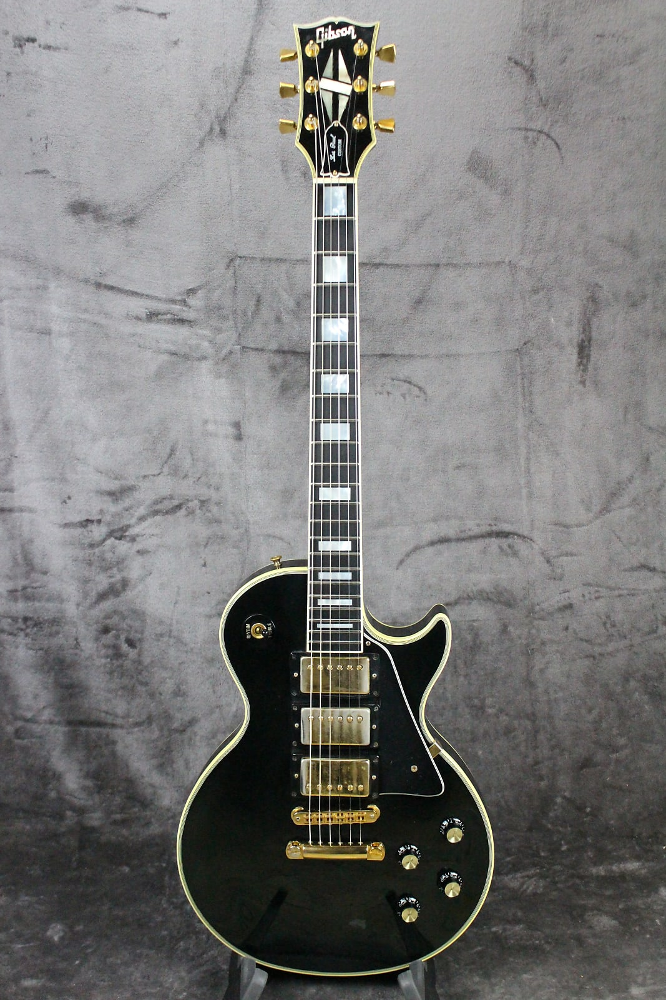
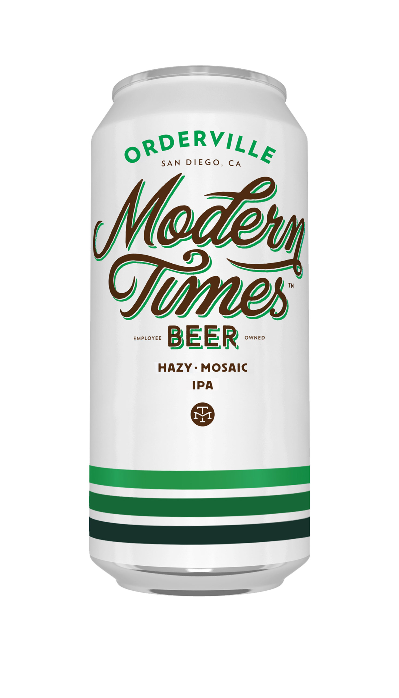
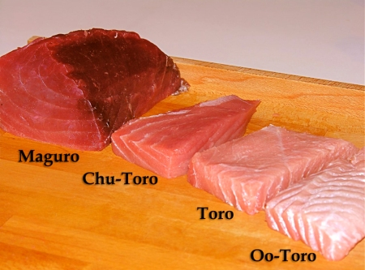

Hello my name is Sevran Acosta and I am probably one of the old timers in the class. I started at Chaffey College in 2002. I am majoring in software engineering and find programming to be a lot of fun. I enjoy blackjack when I have the chance, although I was banned from all the MGM Grand casinos on the Las Vegas strip for card counting, though I was not doing that! I do know how to count cards though I was not counting at the time of this happening. I love to go to Japanese restaurants as Japanese Food is my favorite kind of food. I know how to play guitar and I have played guitar for 15 years but I have not played in about 10 years. I can not think of much else there is to say about me, thanks for taking the time to read this, and good luck in the class. :)
  | Favorite Guitars | My all time favorite guitar is a Gibson Les Paul black custom. After Gibson I enjoy playing Taylor accoustic guitars. Third but not least is a good ol' Fender Stratocaster, american made. |
| Favorite Craft Beers | I am a fan of the pale ales. Nothing that is too bitter or burns the back of your throat while drinking. I enjoy Blue Moon, Firestone 805, Modern Times, Heinekin and Corona. |
| Plans for the future | I am finished with my general ed and I am looking to transfer to Cal State San Bernadino. After college I hope to be able to land a job in software engineering. |